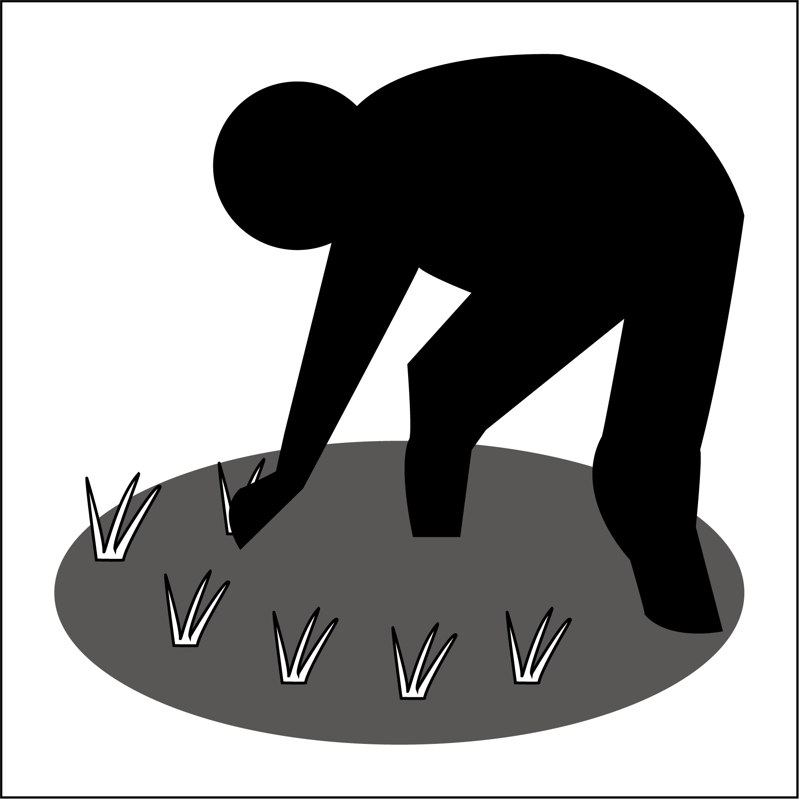
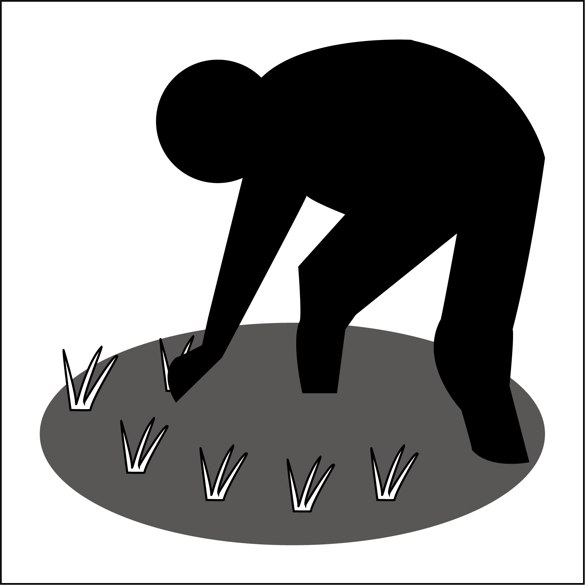

「中山間盛り上げ隊」隊員募集
宮崎県では、中山間地域の集落等が実施する各種活動の支援、中山間地域の住民と都市住民との交流促進のため「中山間盛り上げ隊」を組織し、その隊員となる方を募集しています。
宮崎県の県土を大きく占める中山間地域では、人口減少や高齢化の進行により、里道の管理作業や伝統芸能などの維持・運営を行なう担い手の確保が大きな課題となっています。このため、中山間地域でボランティア活動を行なう「中山間盛り上げ隊」を組織し、中山間地域の集落及び市町村等からの要請に応じて、集落等の行なう各種活動を支援するとともに、これらの活動を通じて中山間地域の住民と都市住民との交流を推進する取組を実施しています。
次の条件をすべて満たす個人又は団体（家族、企業、学校、グループ等）とします。
中山間地域での支援活動に興味を有すること。
下記3「主な活動内容」に例示する活動に対応が可能であること。
小学生以上であること。
県が中山間盛り上げ隊の管理・運営を委託した団体（以下「事務局」という。）と電子メールにより連絡ができること。
特別な資格や技能は必要ありません。
注意1：中学生以下の方については、保護者又は教員等の同伴参加がある場合に限り支援活動への参加を可能とします。
注意2：高校生については、保護者の同意がある場合に限り支援活動への参加を可能とします。
注意3：支援活動の内容によっては、高校生以下の方は参加できない場合があります。
活動の内容は、中山間地域の集落及び市町村等から要請のあった次に例示するような活動を行います。
集落道の草刈り、用水路の清掃等の環境保全活動
山水利用の集落における水源地の管理
農作業の手伝い
植栽・下刈り等の森林保全活動
鳥獣害防除ネットの設置等の鳥獣害対策
伝統芸能の実施サポート
集落の祭り又は地域行事の運営補助
集落等で作られた特産品のPR活動
その他集落等の維持・活性化を図る上で必要な活動
隊員募集要領に基づき登録申込みをいただくと、隊員として登録されます。
中山間地域の集落や市町村から隊員への支援依頼がある度に、事務局から作業日程、内容等について電子メールでお知らせしますので、参加を希望される場合は、その旨を回答していただきます。
令和2年度の事務局
【北部地区】
（延岡市、日向市、門川町、諸塚村、椎葉村、美郷町、高千穂町、日之影町、五ヶ瀬町）
特定非営利活動法人宮崎文化本舗
電話番号：0985-60-3911
ファックス番号：0985-89-4979
【児湯・西部地区】
（小林市、西都市、えびの市、高原町、西米良村、木城町、都農町)
株式会社アイロード
電話番号：0983-36-1117
ファックス番号：0983-36-1123
【中部・南部地区】
（宮崎市、都城市、日南市、串間市、三股町、国富町、綾町）
株式会社ネットワークデザイン
電話番号：0985-71-2955
ファックス番号：0985-71-2955